library(haven) # version 2.5.3
library(dplyr) # version 1.1.2
library(rdrobust) # version 2.1.1
library(magrittr) # version 2.0.3
library(rdpower) # version 2.2
library(rddensity) # version 2.6
library(gridExtra) # version 2.3
library(ggplot2) # version 3.4.2
library(kableExtra) # version 1.3.4
library(devtools) # version 2.4.5
source_url("https://github.com/ekhartman/rdd_equivalence/blob/master/RDD_equivalence_functions.R?raw=TRUE")
df <- read_dta("E:/RDData/APSR/Klasnja/KlasnjaTitiunik-Brazil-data.dta")
df %<>% filter(!is.na(mv_incparty))
df %<>% mutate(population=population/1000,
expend_total=expend_total/1000,
revenue_total=revenue_total/1000)RD Testing
This page accompanies my working paper on selective testing in regression discontinuity (RD) designs. It gives recommendations for systematically conducting tests, according to recent insights from the methodological RD literature. I focus on ten typical RD tests that cover the most important aspects of an RD analysis: the RD identification assumption, sensitivity to the model specification, and other RD-specific threats, such as low statistical power, overfitting, and excessive false positive findings. To illustrate how these tests can be conducted, I apply them to a data set from Klašnja and Titiunik (2017), KT henceforth (replication package). The R and Stata code may serve as a template for other researchers that want to conduct RD tests.
KT explore political accountability in Brazilian mayorial elections. They argue that weak party structures and term limits undermine accountability, leading to opportunistic behavior by incumbents, which voters punish in subsequent elections. In my replication, I test the main result presented in Table 2. The statistically significant coefficient of -0.15 suggests that an incumbent party that is barely reelected is 15 percentage points less likely to win the following election than a similar incumbent party that is barely defeated. Table 2 thus demonstrates the existence of an incumbency disadvantage, which the authors link to weak party structures and term limits in the rest of the paper.
As their main model specification, KT use a local linear model with an MSE-optimal bandwidth, triangular kernel, and no covariates. Inference is conducted using robust confidence intervals. These are the default settings I recommend in the working paper. To estimate RD models, both KT and I rely on rdrobust software. It provides a convenient way to apply polynomial estimators, allowing me to conduct many of the tests by adding or changing a single argument/option.
Replication
Before replicating the result for incumbent parties in Table 2 and subjecting it to various tests, I first have to set up R and Stata. This consists of loading the necessary packages/commands, reading the data, and scaling some of the covariates for ease of interpretation. The most notable line of R code, the one that uses the devtools function, loads the functions required for Hartman’s (2021) equivalence tests. There is currently no Stata version available.
/* net install rdrobust, from(https://raw.githubusercontent.com/rdpackages/rdrobust/master/stata) replace
net install rddensity, from(https://raw.githubusercontent.com/rdpackages/rddensity/master/stata) replace
net install lpdensity, from(https://raw.githubusercontent.com/nppackages/lpdensity/master/stata) replace
net install rdpower, from(https://raw.githubusercontent.com/rdpackages/rdpower/master/stata) replace */
use "E:/RDData/APSR/Klasnja/KlasnjaTitiunik-Brazil-data.dta"
drop if missing(mv_incparty)
replace population = population/1000
replace expend_total = expend_total/1000
replace revenue_total = revenue_total/1000Now that everything is set up, I can replicate the main result from Table 2:
rd_l1 <- with(df, rdrobust(inc_party_wonfor1_b1, mv_incparty))
summary(rd_l1)Sharp RD estimates using local polynomial regression.
Number of Obs. 10010
BW type mserd
Kernel Triangular
VCE method NN
Number of Obs. 4454 5556
Eff. Number of Obs. 2548 2758
Order est. (p) 1 1
Order bias (q) 2 2
BW est. (h) 13.566 13.566
BW bias (b) 27.391 27.391
rho (h/b) 0.495 0.495
Unique Obs. 4441 5297
=============================================================================
Method Coef. Std. Err. z P>|z| [ 95% C.I. ]
=============================================================================
Conventional -0.148 0.025 -5.866 0.000 [-0.197 , -0.098]
Robust - - -5.532 0.000 [-0.213 , -0.101]
=============================================================================rdrobust inc_party_wonfor1_b1 mv_incpartySharp RD estimates using local polynomial regression.
Cutoff c = 0 | Left of c Right of c Number of obs = 10010
-------------------+---------------------- BW type = mserd
Number of obs | 4454 5556 Kernel = Triangular
Eff. Number of obs | 2548 2758 VCE method = NN
Order est. (p) | 1 1
Order bias (q) | 2 2
BW est. (h) | 13.566 13.566
BW bias (b) | 27.391 27.391
rho (h/b) | 0.495 0.495
Outcome: inc_party_wonfor1_b1. Running variable: mv_incparty.
--------------------------------------------------------------------------------
Method | Coef. Std. Err. z P>|z| [95% Conf. Interval]
-------------------+------------------------------------------------------------
Conventional | -.14758 .02516 -5.8663 0.000 -.196892 -.098275
Robust | - - -5.5322 0.000 -.212661 -.101395
--------------------------------------------------------------------------------The results generally replicate. They suggest that when an incumbent party barely wins the election at time \(t\), it is on average 15 percentage points less likely to win the following mayoral election at \(t+1\) than when it barely loses. This effect is significantly different from zero, with the robust 95% confidence interval ranging from −21 to −10 percentage points.
Note that the point estimate and confidence interval are not exactly the same as in Table 2 of KT. I use the latest version of the rdrobust function, which calculates the MSE-optimal bandwidth differently than the 2014 version that Table 2 is based on. The resulting differences are negligible.
Tests
Test 1: RD Plot of Main Model
As a first step, researchers should plot the estimated model. RD designs lend themselves to visual inspection, as the link between the RD plot and the estimated treatment effect is particularly intuitive. RD plots typically consist of a set of binned outcome means, showing the variability in the underlying data, and a smooth line that visualizes the fitted model. From a testing perspective, RD plots can help assess the plausibility of the fitted model by showing whether it is supported by the underlying data. Moreover, small bandwidths with overly steep slopes are suggestive of overfitting (see Albada (2024b) for a discussion on overfitting).
The simplest way to construct an RD plot is through rdplot software (Calonico, Cattaneo, and Titiunik 2015), which does most of the work for you. By default, the bin width is set with the variance mimicking method, as recommended by Korting et al. (2023). In my experience, these bins accurately represent the underlying variance in large data sets, but can create too large bins in small data sets, say, of less than 1,000 observations. If this is the case, manually setting the bin width may be better. To plot the local linear model, one has to adjust the polynomial, kernel, and bandwidth settings, as shown in the code below:
with(df, rdplot(y=inc_party_wonfor1_b1, x=mv_incparty, p=1, kernel = "triangular", h=rd_l1$bws[1],
x.lim = c(-50,50), col.dots = "grey60", col.lines = "black", y.lim = c(0,0.6),
x.label = "Incumbent Party Vote Margin at t",
y.label = "Probability of Unconditional Victory at t+1",
title = "Main Model", nbins=c(50,50)))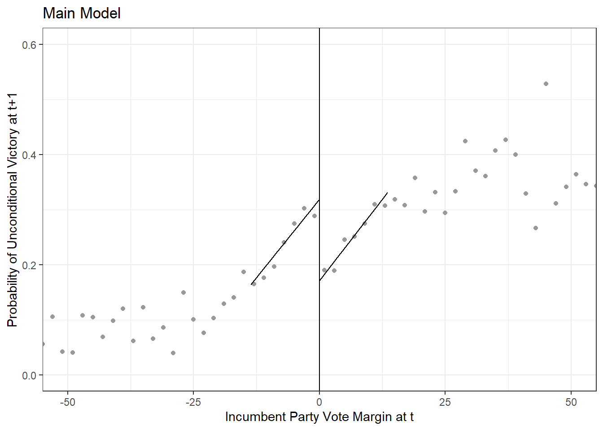
rdplot inc_party_wonfor1_b1 mv_incparty if abs(mv_incparty)<=50, p(1) h(`e(h_l)') ///
kernel(triangular) graph_options(legend(off) title("Main Model") ///
ytitle("Probability of Unconditional Victory at t+1") xtitle("Incumbent Party Vote Margin at t"))
qui graph export "rdplot.svg", replace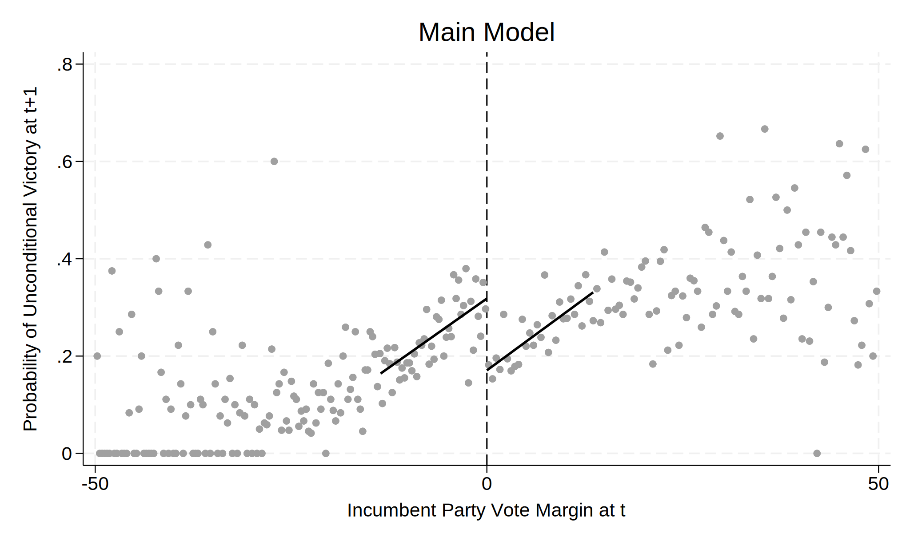
The RD plot of the main model is convincing: (1) the binned means exhibit an upward-trending functional form within the bandwidth - one that does not rely on overaggregating the bins, (2) the binned means show a clear jump at the discontinuity, and (3) the model lines, while somewhat steep, nicely overlap the binned means. Overall, this plot provides support for the point estimate.
Test 2: Density Test
I next consider the identification assumption of the RD design: continuity of the conditional expectation functions of the treatment and control groups. Continuity will break down if observations have precise control over their running variable value and are thereby able to sort themselves into the treatment or control group. While directly testing for continuity is impossible, as the conditional expectation functions are not observed past the cutoff point, three tests make this assumption more plausible.
First is the density test. It evaluates whether the density of the running variable is continuous at the cutoff. McCrary (2008) based this test on the idea that if units are unable to precisely manipulate their value of the running variable, the number of units just above the cutoff should be similar to those just below. Cattaneo, Jansson, and Ma (2020) recently developed a local polynomial density estimator that offers an improvement over preceding tests in an RD setting. It is implemented using rddensity software. The null hypothesis of the density test assumes continuity. It is successful if the estimated discontinuity is statistically insignificant at conventional significance levels.
dens_p <- with(df %>% filter(!is.na(inc_party_wonfor1_b1)), rddensity(mv_incparty))
dens_plot <- with(df %>% filter(!is.na(inc_party_wonfor1_b1)),
rdplotdensity(rddensity(mv_incparty), mv_incparty, plotRange = c(-50,50),
noPlot = T, ylabel = "Density",
xlabel="Incumbent Party Vote Margin at t"))$Estplot
dens_plot <- dens_plot +
annotate(geom="text", x=20, y=0.022, label=paste("p-value =", round(dens_p$test$p_jk,3))) +
labs(title="Cattaneo, Jansson & Ma Density Test") +
theme(plot.title = element_text(hjust=0.5))
dens_plot
qui rddensity mv_incparty if !missing(inc_party_wonfor1_b1)
local pval = round(e(pv_q), 0.01)
rddensity mv_incparty if !missing(inc_party_wonfor1_b1), plot ///
graph_opt(title("Cattaneo, Jansson & Ma Density Test") ytitle("Density") ///
xtitle("Incumbent Party Vote Margin at t") `"text(0.02 20 "p-value = `pval'")"' legend(off))
qui graph export "densityplot.svg", replace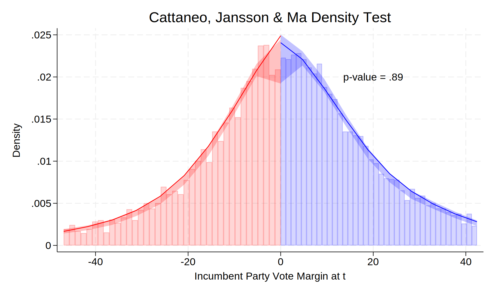
The plot summarizes the results from the density test. There is no evidence of sorting: the p-value is statistically insignificant and the histogram shows no heaping on either side of the discontinuity.
To make a stronger argument for continuity, researchers should apply an equivalence test framework to the density test. Instead of testing whether the densities on the left and right sides of the discontinuity are equal, the equivalence test assesses whether the ratio of densities is outside a pre-defined, substantively inconsequential range. Equivalence tests thus reverse the null hypothesis - they start off with the assumption that there is no continuity and challenge the researcher to provide sufficiently strong evidence of continuity. They are successful if the ratio’s confidence interval is small enough to entirely fall within the range, which only happens if the test has sufficient observations.
I set the substantively inconsequential range for the density ratio at [2/3, 1.5], following Hartman (2021) and Fitzgerald (2024). Note that the definition of substantively inconsequential could differ in each context. Finally, as Hartman’s (2021) equivalence test is currently not available for Stata, I only show R code.
den_est <- with(df %>% filter(!is.na(inc_party_wonfor1_b1)),
rddensity(mv_incparty, vce = "plugin"))
equiv_den <- rdd.tost.ratio(estL = den_est$hat$left, estR = den_est$hat$right,
seL = den_est$sd_asy$left, seR = den_est$sd_asy$right, eps = 1.5)
equiv_den_out <- rbind("Observations" = den_est$N$eff_left + den_est$N$eff_right,
"Ratio" = round(den_est$hat$left / den_est$hat$right, 2),
"Equivalence CI" = paste0("[", round(1/equiv_den$inverted,2), ", ", round(equiv_den$inverted,2), "]"),
"P-value" = ifelse(round(equiv_den$p,2)==0,"<0.01",round(equiv_den$p,2)))
kable(equiv_den_out,
col.names = NA) %>% column_spec(1, bold=T)| Observations | 5692 |
| Ratio | 0.99 |
| Equivalence CI | [0.85, 1.17] |
| P-value | <0.01 |
The resulting equivalence confidence interval is easily bound within the substantively inconsequential range and the p-value of the equivalence test is below the conventional 5% significance level.
Test 3: Balance Test
Balance tests, also known as pre-treatment covariates or outcome tests, compare treatment and control units on variables unrelated to the treatment. If units cannot manipulate their running variable value, there should be no discontinuous change in these pre-determined variables at the cutoff. Balance tests typically copy the standard estimation procedure but replace the outcome with a covariate or lagged outcome.
The code below replicates the balance test in Table S3 of KT. I estimate discontinuities for 13 covariates using a local linear model with an MSE-optimal bandwidth and triangular kernel. Test success is based on traditional null hypothesis significance testing (NHST), where insignificant estimates support the continuity assumption. As with the density test, I also apply Hartman’s (2021) equivalence test framework to the balance test. Instead of testing whether the confidence interval of the estimate includes zero, equivalence tests assess whether the confidence interval falls within a range that is deemed substantively inconsequential. Again, this ensures that insignificant estimates are not because of insufficient statistical power.
The substantively inconsequential range corresponds to a medium effect size according to Cohen’s \(d\) - half the standard deviation of the outcome of control units within the MSE-optimal bandwidth. This is a lenient threshold, given that many effect sizes in the social sciences fall into the small effect size category.
As the balance test is usually conducted for many covariates, I also correct for multiple testing. This poses a problem in traditional null hypothesis testing: adding irrelevant, noisy covariates increases the number of hypotheses tested, thus reducing the probability of rejecting the null . In contrast, equivalence testing reverses the type 1 and type 2 errors, removing this concern. I therefore only apply multiple testing corrections to the p-values of the equivalence tests and not to those of the null hypothesis tests.
covs <- with(df, list(pibpc, population, winner_age, winner_educ, winner_male,
numpar_candidates_eff, dnorte, dnordeste, dsul, dsudeste,
dcentrooeste, revenue_total, expend_total))
equiv_cont_out <- data.frame()
for(i in 1:length(covs)){
rd <- with(df, rdrobust(covs[[i]], mv_incparty))
eps_cont <- 0.5*sd(covs[[i]][df$mv_incparty<0&df$mv_incparty>-rd$bws[1]], na.rm = T)
equiv_cont <- rdd.equiv(rd$coef[1], rd$se[3], eps = eps_cont)
equiv_cont_out <- bind_rows(equiv_cont_out,
data.frame(n_eff = sum(rd$N_h),
est = round(rd$coef[1],2),
p_val_nhst = round(rd$pv[3],2),
est_scaled = round(rd$coef[1]/(2*eps_cont),2),
equiv_ci = paste0("[", -round(equiv_cont$inverted/(2*eps_cont),2), ", ", round(equiv_cont$inverted/(2*eps_cont),2), "]"),
p_val = round(equiv_cont$p,2)))
}
equiv_cont_out %<>% mutate(p_val=round(p.adjust(p_val, method="fdr"),2),
p_val=ifelse(p_val==0,"<0.01",p_val))
row.names(equiv_cont_out) <- c("Municipal GDP per capita", "Population", "Winner's Age",
"Winner's Education", "Winner Male", "Number of Effective Parties",
"Municipality in North", "Municipality in North-East",
"Municipality in South", "Municipality in South-East",
"Municipality in Center-East", "Total Revenue", "Total Expenditure")
kable(equiv_cont_out,
col.names = c("Observations", "Estimate", "P-value NHST", "Standardized Estimate",
"Equivalence CI", "Equivalence p-value"),
align = "c")| Observations | Estimate | P-value NHST | Standardized Estimate | Equivalence CI | Equivalence p-value | |
|---|---|---|---|---|---|---|
| Municipal GDP per capita | 7366 | -149.92 | 0.85 | -0.02 | [-0.1, 0.1] | <0.01 |
| Population | 5057 | -0.02 | 0.86 | 0.00 | [NA, NA] | <0.01 |
| Winner’s Age | 7549 | 1.24 | 0.01 | 0.12 | [-0.21, 0.21] | <0.01 |
| Winner’s Education | 7929 | -0.03 | 0.83 | -0.02 | [-0.09, 0.09] | <0.01 |
| Winner Male | 7432 | 0.00 | 0.89 | 0.01 | [-0.06, 0.06] | <0.01 |
| Number of Effective Parties | 6721 | -0.04 | 0.17 | -0.07 | [-0.17, 0.17] | <0.01 |
| Municipality in North | 6038 | -0.02 | 0.09 | -0.09 | [-0.2, 0.2] | <0.01 |
| Municipality in North-East | 6879 | 0.01 | 0.75 | 0.01 | [-0.09, 0.09] | <0.01 |
| Municipality in South | 7499 | 0.03 | 0.16 | 0.07 | [-0.16, 0.16] | <0.01 |
| Municipality in South-East | 7422 | -0.01 | 0.39 | -0.03 | [-0.12, 0.12] | <0.01 |
| Municipality in Center-East | 7248 | 0.00 | 0.88 | -0.01 | [-0.09, 0.09] | <0.01 |
| Total Revenue | 3459 | -2845.65 | 0.33 | -0.06 | [-0.15, 0.15] | <0.01 |
| Total Expenditure | 3368 | -2616.67 | 0.37 | -0.05 | [-0.14, 0.14] | <0.01 |
preserve
postutil clear
tempfile results
postfile table str26 Variable Observations Estimate str20 CI P_value using `results'
local count = 1
foreach var of varlist pibpc population winner* numpar_candidates_eff dnorte ///
dnordeste dsul dsudeste dcentrooeste revenue_total expend_total {
qui rdrobust `var' mv_incparty
local label : variable label `var'
local ci_l = round(e(ci_l_rb), 0.01)
local ci_r = round(e(ci_r_rb), 0.01)
post table ("`label'") (e(N_h_l) + e(N_h_r)) (round(e(tau_cl), 0.001)) ///
(`"[`ci_l', `ci_r']"') (round(e(pv_rb), 0.01))
}
postclose table
use `results', clear
list, clean noobs
restore 2. qui rdrobust `var' mv_incparty
3.
7. }
Variable Observ~s Estimate CI P_value
Municipal GDP per capita 7366 -149.918 [-1205.78, 992.35] .85
Population 5057 -.023 [-3.79, 4.54] .86
Winner's education 7929 -.029 [-.21, .17] .83
Winner's gender (male = 1) 7432 .002 [-.03, .03] .89
Winner's age 7549 1.238 [.31, 2.45] .01
Effective number of partie 6721 -.036 [-.1, .02] .17
Located in the north 6038 -.023 [-.06, 0] .09
Located in the north-east 6879 .006 [-.04, .06] .75
Located in the south 7499 .029 [-.01, .08] .16
Located in the south-east 7422 -.015 [-.07, .03] .39
Located in the center-east 7248 -.004 [-.03, .03] .88
Total revenue 3459 -2845.651 [-7920.39, 2663.77] .33
Total expenditure 3368 -2616.667 [-7381.46, 2740.15] .37 Note that the point estimates and confidence intervals differ from those in Table S3 of KT. This is again due to the older version of rdrobust, leading to different bandwidths. However, KT also incorrectly label the covariates. For example, in Table S3, the correct coefficient for the GDP per capita is given for the North variable.
Using the NHST balance test, winner’s age yields a statistically significant estimate at the 5% level (p-value <0.01). Although a single significant estimate could simply be a type 1 error, it is important to consider whether the estimate is substantive. On the face of it, just over one age year difference does not sound alarming. When standardizing the estimate, we can see that 1.24 is 0.12 of the winner’s age variable standard deviation, also a relatively small effect size. Finally, the equivalence confidence interval is [-0.21, 0.21], which is clearly bound within the inconsequential range of [-0.5, 0.5]. I would therefore argue that the significant NHST is of little practical concern. Together with all the other significant equivalence test p-values, the balance test seems to support the continuity assumption.1
Test 4: Donut RD
The donut RD, introduced by Barreca et al. (2011), is a test that considers the influence of the observations closest to the cutoff. It removes the observations just above and below the cutoff and re-estimates the treatment effect using the main model specification. If units sort themselves, they might only do so very close to the cutoff, and excluding these units should therefore substantially change the treatment estimate.
To ensure that not too many observations are removed, potentially creating a model without any support near the discontinuity, I limit the maximum donut hole size. It excludes at most an arbitrary 5% of the sample (i.e. an incumbent party vote margin of approximately 1%).
donut_range <- seq(0,1,0.2)
est <- vector()
ci_l <- vector()
ci_r <- vector()
counter <- 1
for (donut in donut_range) {
rd <- with(df %>% filter(abs(mv_incparty)>=donut), rdrobust(inc_party_wonfor1_b1, mv_incparty))
est[counter] <- rd$Estimate[1]
ci_l[counter] <- rd$ci[3,1]
ci_r[counter] <- rd$ci[3,2]
counter <- counter + 1
}
donut_out <- data.frame(donut_range, est, ci_l, ci_r)
donut_out %<>% mutate(sig=!(ci_l<0&ci_r>0))Code
donut_out %>% ggplot(aes(donut_range, est, col=factor(sig, level=c(T, F)))) +
geom_hline(yintercept = 0, col="grey30") +
geom_point() +
geom_errorbar(aes(ymin=ci_l, ymax=ci_r)) +
annotate("rect", xmin = -0.1, xmax = 0.1, ymin = -0.3, ymax = 0.05, alpha = .15) +
theme_bw() +
scale_y_continuous(expand=c(0,0), limits=c(-0.3,0.05)) +
scale_x_continuous(expand=c(0.02,0.02), breaks=c(0,0.2,0.4,0.6,0.8,1)) +
scale_color_manual(breaks=c(T,F), values=c("black", "grey60")) +
labs(x="Donut Size",
y="Estimated Treatment Effect") +
theme(panel.grid.minor = element_blank(),
legend.position = "none")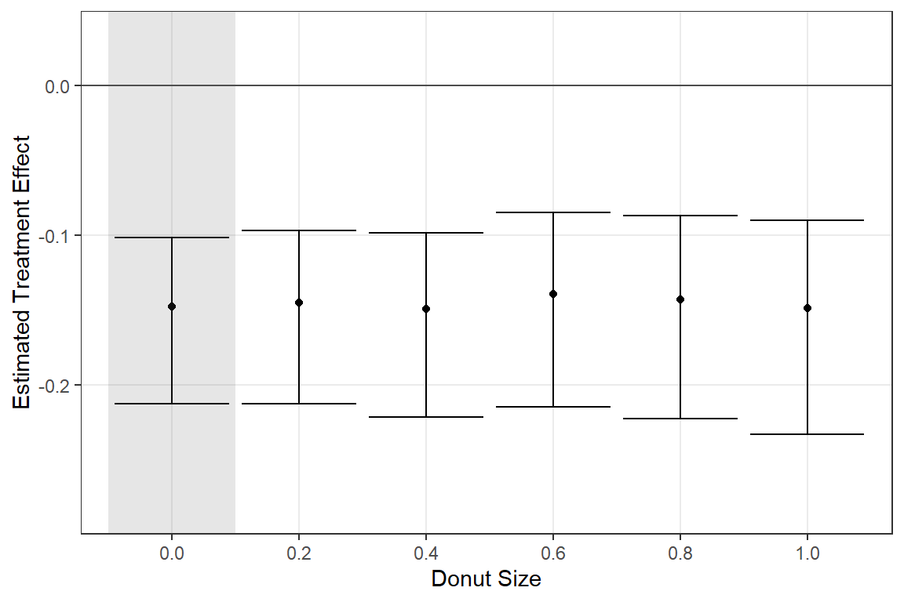
preserve
postutil clear
tempfile results
postfile table donut est ci_l ci_r using `results'
forvalues d=0(0.2)1 {
qui rdrobust inc_party_wonfor1_b1 mv_incparty if abs(mv_incparty)>=`d'
post table (`d') (e(tau_cl)) (e(ci_l_rb)) (e(ci_r_rb))
}
postclose table
use `results', clear
scatter est donut, mc(black) || rcap ci_r ci_l donut, lc(black) ||, yline(0) ///
xtitle("Donut Size", margin(small)) ytitle("RD Treatment Effect", margin(small)) ///
legend(off) graphregion(color(white)) yscale(range(-0.25 0.05)) ylabel(-0.25(0.05)0.05)
qui graph export "donutplot.svg", replace
restore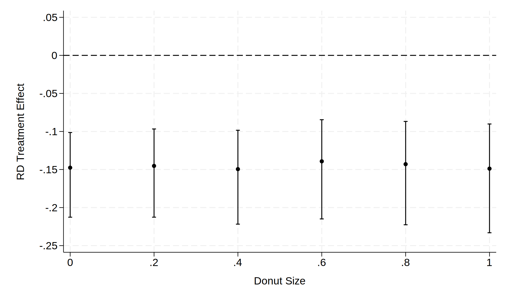
All estimated treatment effects and their corresponding confidence intervals are very similar to the ones from the main model. The donut RD test thus gives no reason to suspect intentional sorting.
Test 5: Bandwidth
In the next set of tests, I assess whether results are sensitive to the model specification. These tests alter parameters from the main model and re-estimate the treatment effect. For results to be robust, estimates should remain consistent in terms of sign, statistical significance and effect size.
The bandwidth determines the width around the cutoff for which the local polynomial model approximates the conditional expectation functions. Bandwidth tests adjust the MSE-optimal bandwidth to smaller or larger sizes, assessing sensitivity to units at the end points of the bandwidth. When conducting bandwidth sensitivity tests, it is important to be aware that models with too small or too large bandwidths can be uninformative. For small bandwidths, the variance can become too high, and for large bandwidths, there can be substantial approximation bias. In this case, I limit the bandwidth range between half and twice the MSE-optimal bandwidth (13.57).
Also note that because bandwidth sensitivity tests rely on manually setting the bandwidth, it is impossible to conduct robust RD inference. Instead, the bandwidth plot below shows conventional 95% confidence intervals.
bw_range <- seq(0.5*rd_l1$bws[1],2*rd_l1$bws[1],0.5)
est <- vector()
ci_l <- vector()
ci_r <- vector()
counter <- 1
for (bw in bw_range) {
rd <- with(df, rdrobust(inc_party_wonfor1_b1, mv_incparty, h=bw))
est[counter] <- rd$Estimate[1]
ci_l[counter] <- rd$ci[1,1]
ci_r[counter] <- rd$ci[1,2]
counter <- counter + 1
}
bw_out <- data.frame(bw_range, est, ci_l, ci_r)Code
bw_out %>% ggplot(aes(bw_range, est)) +
geom_hline(yintercept = 0, col="grey30") +
geom_line() +
geom_line(aes(bw_range, ci_l), col="grey60", linetype=2) +
geom_line(aes(bw_range, ci_r), col="grey60", linetype=2) +
theme_bw() +
labs(y="Estimated Treatment Effect",
x="Bandwidth Size")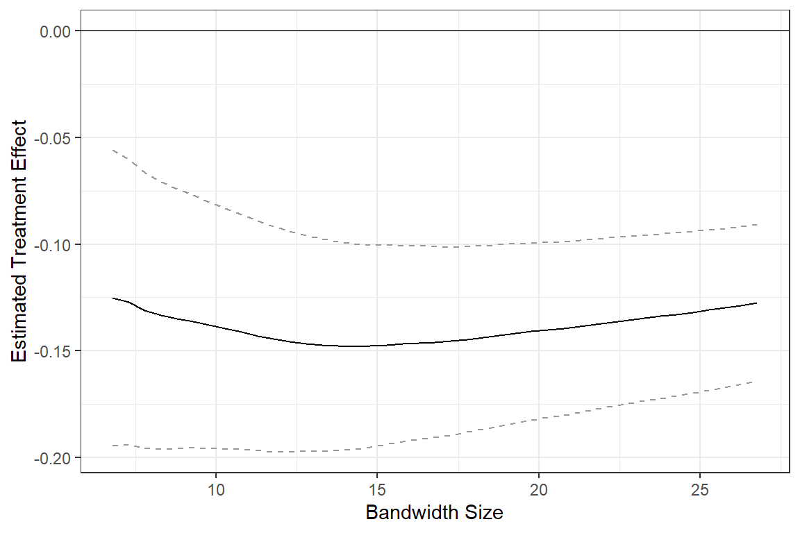
preserve
postutil clear
tempfile results
postfile table bw est ci_l ci_r using `results'
local bw_min = round(0.5*e(h_l),1)
local bw_max = round(2*e(h_l),1)
forvalues bw=`bw_min'(1)`bw_max' {
qui rdrobust inc_party_wonfor1_b1 mv_incparty, h(`bw')
post table (`bw') (e(tau_cl)) (e(ci_l_cl)) (e(ci_r_cl))
}
postclose table
use `results', clear
scatter est bw, mc(black) || rcap ci_r ci_l bw, lc(black) ||, yline(0) ///
xtitle("Bandwidth", margin(small)) ytitle("RD Treatment Effect", margin(small)) ///
legend(off) graphregion(color(white)) yscale(range(-0.25 0.05)) ylabel(-0.25(0.05)0.05)
qui graph export "bwplot.svg", replace
restore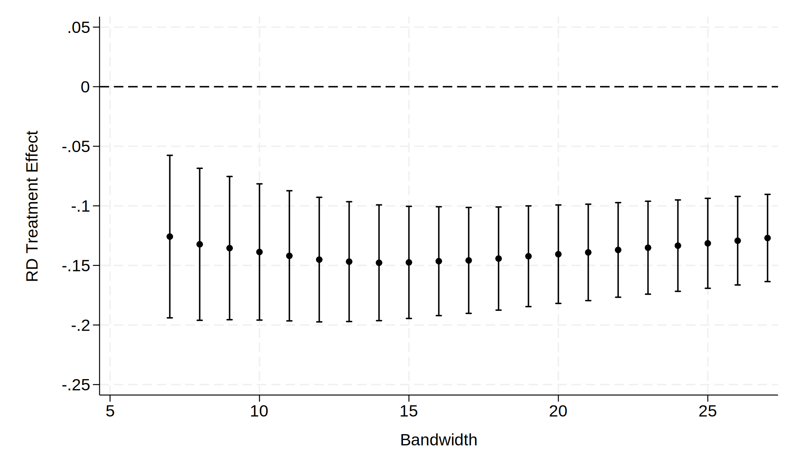
The treatment estimate is stable across all bandwidth sizes, staying within a -0.125 and -0.15 range. Although the confidence intervals widen as the bandwidth gets close to its smallest size, all estimates are statistically significant. The estimate from the main model does not appear to be sensitive to the bandwidth choice.
Test 6: Polynomial
The polynomial order controls the functional form with which to approximate the conditional expectation functions. Instead of linear functional form, researchers can estimate the treatment effect with a quadratic or cubic one. These models helps detect remaining nonlinearities within the bandwidth that may bias the local linear model. They also require a different bandwidth, namely the one that is MSE-optimal for a quadratic or cubic specification.
rd_l2 <- with(df, rdrobust(inc_party_wonfor1_b1, mv_incparty, p=2))
rd_l3 <- with(df, rdrobust(inc_party_wonfor1_b1, mv_incparty, p=3))
pol_out <- data.frame(mod=c("Main", "Local 2nd", "Local 3rd"),
est=c(rd_l1$coef[1], rd_l2$coef[1], rd_l3$coef[1]),
ci_l=c(rd_l1$ci[3,1], rd_l2$ci[3,1], rd_l3$ci[3,1]),
ci_r=c(rd_l1$ci[3,2], rd_l2$ci[3,2], rd_l3$ci[3,2]))
pol_out %<>% mutate(sig=!(ci_l<0&ci_r>0))Code
pol_out %>% ggplot(aes(factor(mod, level=unique(mod)), est, col=factor(sig, level=c(T, F)))) +
geom_hline(yintercept = 0, col="grey30") +
geom_point() +
geom_errorbar(aes(ymin=ci_l, ymax=ci_r)) +
annotate("rect", xmin = 0.5, xmax = 1.5, ymin = -0.25, ymax = 0.05, alpha = .15) +
theme_bw() +
scale_y_continuous(expand=c(0,0), limits=c(-0.25,0.05)) +
scale_color_manual(breaks=c(T,F), values=c("black", "grey60")) +
labs(x="Model",
y="Estimated Treatment Effect") +
theme(panel.grid.minor = element_blank(),
legend.position = "none")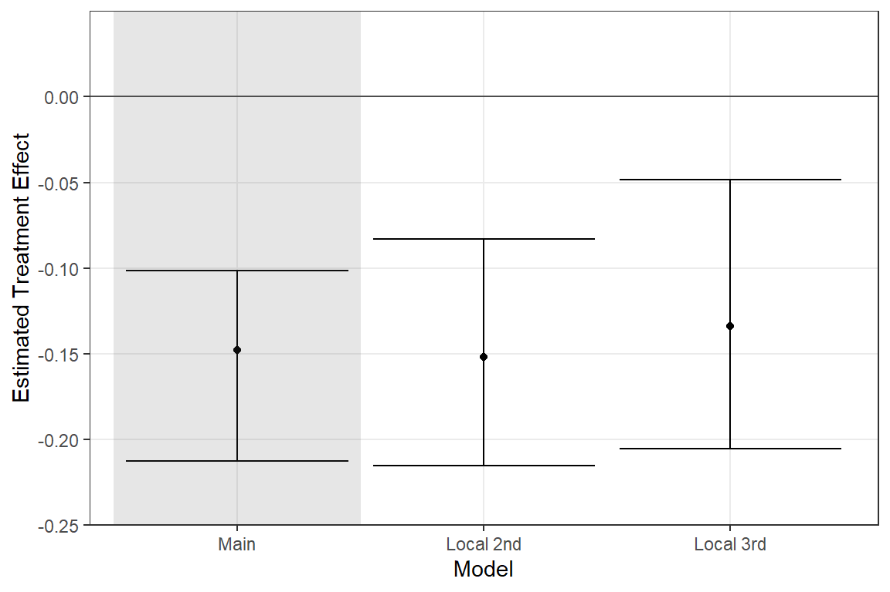
preserve
postutil clear
tempfile results
postfile table mod est ci_l ci_r using `results'
qui rdrobust inc_party_wonfor1_b1 mv_incparty
post table (1) (e(tau_cl)) (e(ci_l_rb)) (e(ci_r_rb))
qui rdrobust inc_party_wonfor1_b1 mv_incparty, p(2)
post table (2) (e(tau_cl)) (e(ci_l_rb)) (e(ci_r_rb))
qui rdrobust inc_party_wonfor1_b1 mv_incparty, p(3)
post table (3) (e(tau_cl)) (e(ci_l_rb)) (e(ci_r_rb))
postclose table
use `results', clear
label def mods 1 "Main" 2 "Local 2nd" 3 "Local 3rd"
label val mod mods
scatter est mod, mc(black) xlabel(1/3, valuelabel) || rcap ci_r ci_l mod, lc(black) ||, ///
yline(0) xtitle("Model", margin(small)) ytitle("RD Treatment Effect", margin(small)) ///
legend(off) graphregion(color(white)) xscale(range(0.5 3.5)) yscale(range(-0.25 0.05)) ///
ylabel(-0.25(0.05)0.05)
qui graph export "polplot.svg", replace
restore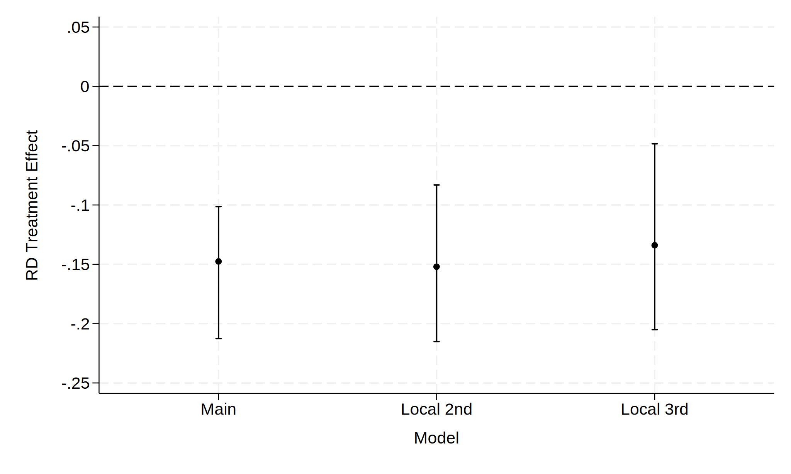
All local models yield statistically significant negative estimates, supporting the findings from the main model. While the estimate from the local third-order polynomial is somewhat smaller (-0.13 compared to the -0.15 of the main model), the effect size difference is within reasonable limits.
Test 7: Kernel
The final model specification test alters the weighting kernel. As opposed to the default triangular kernel, which gives more weight to units near the cutoff, the uniform kernel weights all units equally. Changing to a uniform kernel therefore tests sensitivity to the units near the discontinuity. In most applications, the kernel is an inconsequential modeling choice - if findings are sensitive to the kernel, they will likely be sensitive to other tests as well.
unifkern <- with(df, rdrobust(inc_party_wonfor1_b1, mv_incparty, kernel="uniform"))
kern_out <- data.frame(mod=c("Main", "Uniform\nKernel"),
est=c(rd_l1$coef[1], unifkern$coef[1]),
ci_l=c(rd_l1$ci[3,1], unifkern$ci[3,1]),
ci_r=c(rd_l1$ci[3,2], unifkern$ci[3,2]))
kern_out %<>% mutate(sig=!(ci_l<0&ci_r>0)) Code
kern_out %>% ggplot(aes(factor(mod, level=unique(mod)), est, col=factor(sig, level=c(T,F)))) +
geom_hline(yintercept = 0, col="grey30") +
geom_point() +
geom_errorbar(aes(ymin=ci_l, ymax=ci_r)) +
annotate("rect", xmin = 0.5, xmax = 1.5, ymin = -0.25, ymax = 0.05, alpha = .15) +
theme_bw() +
scale_y_continuous(expand=c(0,0), limits=c(-0.25,0.05)) +
scale_color_manual(breaks=c(T,F), values=c("black", "grey60")) +
labs(x="Model",
y="Estimated Treatment Effect") +
theme(panel.grid.minor = element_blank(),
legend.position = "none")preserve
postutil clear
tempfile results
postfile table mod est ci_l ci_r using `results'
qui rdrobust inc_party_wonfor1_b1 mv_incparty
post table (1) (e(tau_cl)) (e(ci_l_rb)) (e(ci_r_rb))
qui rdrobust inc_party_wonfor1_b1 mv_incparty, kernel(uniform)
post table (2) (e(tau_cl)) (e(ci_l_rb)) (e(ci_r_rb))
postclose table
use `results', clear
label def mods 1 "Main" 2 "Uniform Kernel"
label val mod mods
scatter est mod, mc(black) xlabel(1/2, valuelabel) || rcap ci_r ci_l mod, lc(black) ||, ///
yline(0) xtitle("Model", margin(small)) ytitle("RD Treatment Effect", margin(small)) ///
legend(off) graphregion(color(white)) xscale(range(0.5 2.5)) yscale(range(-0.25 0.05)) ///
ylabel(-0.25(0.05)0.05)
qui graph export "kernplot.svg", replace
restoreAs with the other model specification tests, the main model is robust. A local linear model with a uniform kernel produces practically the same results as the one with a triangular kernel.
Test 8: Placebo Cutoffs
Placebo cutoff tests alter the cutoff value of the running variable and re-estimate the treatment effect. As the outcome should only change discontinuously at the true cutoff, placebo cutoffs are expected to yield insignificant estimates. By conducting this test with many placebo cutoffs, researchers obtain an estimate of the false positive rate of the estimation procedure. While rates should be approximately five percent for 95% confidence intervals, they can be substantially higher in RD settings with a large number of observations (Gelman and Imbens 2019; Albada 2024a), raising concerns that a significant estimate at the true cutoff is not actually driven by the treatment.
While the intuition behind placebo cutoff tests is straightforward, they present challenges in modeling decisions. To obtain an accurate estimate of the false positive rate, researchers should ideally mirror the estimation procedure used at the true cutoff. This means staying consistent with observations, polynomial order, kernel, and bandwidth estimation method. However, if one assumes there is a treatment effect, using all observations can lead to contamination, meaning that treated units end up in the control group, and control units in the treatment group.
To mitigate this issue, researchers may decide to only include units with positive values for the running variable when the placebo cutoff is positive, and vice versa. The downside of this separation is that it substantially reduces the number of observations, reducing the probability of estimating statistically significant effects compared to the main model. Furthermore, it complicates bandwidth selection, especially close to the discontinuity. By using a single bandwidth for both sides of the placebo cutoff, researchers can end up with a very small bandwidth, simply because the support of the running variable runs out on one side. Allowing for varying bandwidth sizes solves this problem but takes the placebo cutoff model further from the original estimation procedure.
The other approach assumes there is no treatment effect. In this case, there cannot be any contamination, allowing researchers to conduct placebo cutoff tests with all the observations in the sample. Although this addresses the aforementioned problems, if a treatment effect indeed exists, it renders all contaminated placebo cutoff tests unreliable (i.e. tests that include zero within the bandwidth support).
As there is no clear dominant option between separating observations or using all of them, I present results from both approaches for the sake of completeness. For the placebo cutoff test using all observations, I mimic the main model specification, except for the cutoff point. For the placebo cutoff tests that separate observations, I change both the cutoff point and the bandwidth selection procedure, calculating separate MSE-optimal bandwidths for both sides of the placebo cutoff.
Lastly, one has to decide for which range of running variable values to conduct placebo tests. I stay between the 20th and 80th percentile of the running variable ([-12.8, 19.9]). This should prevent conducting placebo tests with very few observations and stays relatively close to the original estimation procedure.
cutoff_range <- seq(-13,20,0.5) # placebo cutoffs with all observations
est <- vector()
ci_l <- vector()
ci_r <- vector()
counter <- 1
for (cutoff in cutoff_range) {
rd <- with(df, rdrobust(inc_party_wonfor1_b1, mv_incparty, c=cutoff))
est[counter] <- rd$Estimate[1]
ci_l[counter] <- rd$ci[3,1]
ci_r[counter] <- rd$ci[3,2]
counter <- counter + 1
}
cutoff_all <- data.frame(cutoff_range, est, ci_l, ci_r)
cutoff_all %<>% mutate(sig=!(ci_l<0&ci_r>0))cutoff_range <- seq(-13,-0.5,0.5) # observations with negative running variable values
est <- vector()
ci_l <- vector()
ci_r <- vector()
counter <- 1
for (cutoff in cutoff_range) {
rd <- with(df %>% filter(mv_incparty<0),
rdrobust(inc_party_wonfor1_b1, mv_incparty, c=cutoff, bwselect="msetwo"))
est[counter] <- rd$Estimate[1]
ci_l[counter] <- rd$ci[3,1]
ci_r[counter] <- rd$ci[3,2]
counter <- counter + 1
}
cutoff_n <- data.frame(cutoff_range, est, ci_l, ci_r)
cutoff_n %<>% mutate(sig=!(ci_l<0&ci_r>0))
cutoff_range <- seq(0.5,20,0.5) # observations with negative running variable values
est <- vector()
ci_l <- vector()
ci_r <- vector()
counter <- 1
for (cutoff in cutoff_range) {
rd <- with(df %>% filter(mv_incparty>=0),
rdrobust(inc_party_wonfor1_b1, mv_incparty, c=cutoff, bwselect="msetwo"))
est[counter] <- rd$Estimate[1]
ci_l[counter] <- rd$ci[3,1]
ci_r[counter] <- rd$ci[3,2]
counter <- counter + 1
}
cutoff_p <- data.frame(cutoff_range, est, ci_l, ci_r)
cutoff_p %<>% mutate(sig=!(ci_l<0&ci_r>0))
cutoff_separate <- rbind(cutoff_n,
cutoff_all[27,],
cutoff_p)Code
cutoff_all %>% ggplot(aes(cutoff_range, est, col=sig)) +
geom_hline(yintercept = 0, col="grey30") +
geom_point() +
geom_errorbar(aes(ymin=ci_l, ymax=ci_r)) +
annotate("rect", xmin = -0.5, xmax = 0.5, ymin = -0.3, ymax = 0.25, alpha = .15) +
theme_bw() +
scale_y_continuous(expand=c(0,0), limits=c(-0.3,0.25)) +
scale_x_continuous(expand=c(0.02,0.02), breaks=c(-40,-30,-20,-10,0,10,20,30,40)) +
scale_color_manual(values=c("grey60", "black")) +
labs(title="All Observations",
x="Placebo Cutoff",
y="Estimated Treatment Effect") +
theme(plot.title = element_text(hjust = 0.5),
panel.grid.minor = element_blank(),
legend.position = "none")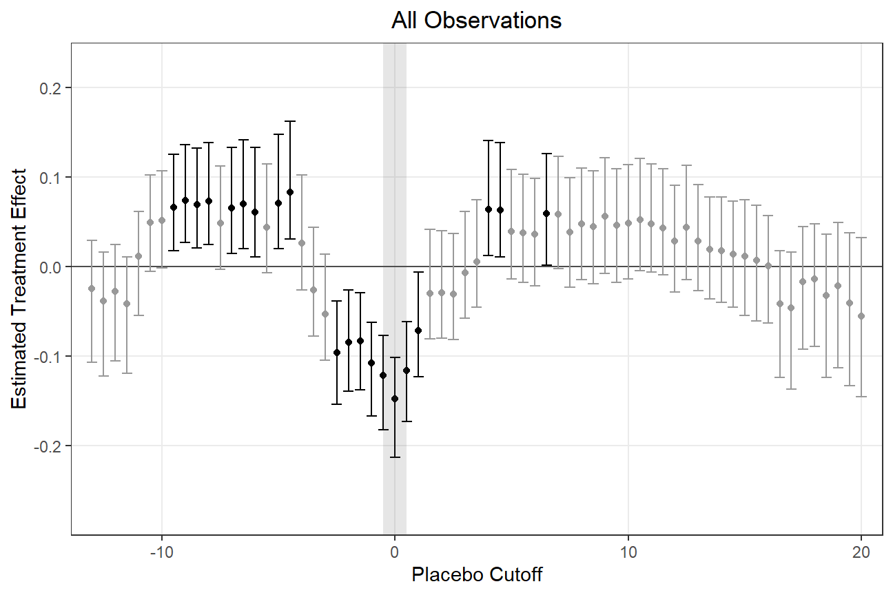
Code
cutoff_separate %>% ggplot(aes(cutoff_range, est, col=sig)) +
geom_hline(yintercept = 0, col="grey30") +
geom_point() +
geom_errorbar(aes(ymin=ci_l, ymax=ci_r)) +
annotate("rect", xmin = -0.5, xmax = 0.5, ymin = -0.35, ymax = 0.5, alpha = .15) +
theme_bw() +
scale_y_continuous(expand=c(0,0), limits=c(-0.35,0.5)) +
scale_x_continuous(expand=c(0.02,0.02), breaks=c(-40,-30,-20,-10,0,10,20,30,40)) +
scale_color_manual(values=c("grey60", "black")) +
labs(title="Separated Observations",
x="Placebo Cutoff",
y="Estimated Treatment Effect") +
theme(plot.title = element_text(hjust = 0.5),
panel.grid.minor = element_blank(),
legend.position = "none")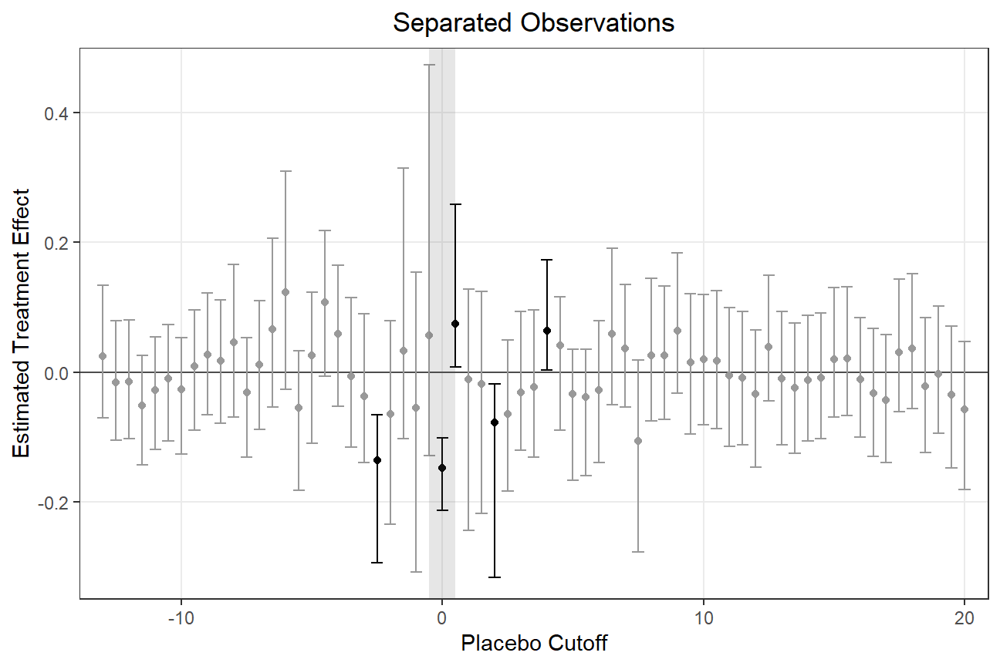
* all observations
preserve
_pctile mv_incparty if !missing(inc_party_wonfor1_b1), p(20, 80)
local c_min = round(r(r1),1)
local c_max = round(r(r2),1)
postutil clear
tempfile results
postfile table c est ci_l ci_r using `results'
forvalues c=`c_min'(0.5)`c_max' {
qui rdrobust inc_party_wonfor1_b1 mv_incparty, c(`c')
post table (`c') (e(tau_cl)) (e(ci_l_rb)) (e(ci_r_rb))
}
postclose table
use `results', clear
gen sig = !(ci_l<0&ci_r>0)
scatter est c if sig==1, mc(black) || rcap ci_r ci_l c if sig==1, lc(black) || ///
scatter est c if sig==0, mc(gs10) || rcap ci_r ci_l c if sig==0, lc(gs10) ||, ///
yline(0) title("All Observations") xtitle("Placebo Cutoff", margin(small)) ///
ytitle("RD Treatment Effect", margin(small)) legend(off) graphregion(color(white)) ///
xscale(range(-13 20)) xlabel(-10(5)20) yscale(range(-0.25 0.2)) ylabel(-0.25(0.05)0.2)
qui graph export "cutoffplot_all.svg", replace
restore
* separated observations
preserve
postutil clear
tempfile results
postfile table c est ci_l ci_r using `results'
forvalues c=`c_min'(0.5)-0.5 {
qui rdrobust inc_party_wonfor1_b1 mv_incparty if mv_incparty<0, c(`c') bwselect(msetwo)
post table (`c') (e(tau_cl)) (e(ci_l_rb)) (e(ci_r_rb))
}
qui rdrobust inc_party_wonfor1_b1 mv_incparty
post table (0) (e(tau_cl)) (e(ci_l_rb)) (e(ci_r_rb))
forvalues c=0.5(0.5)`c_max' {
qui rdrobust inc_party_wonfor1_b1 mv_incparty if mv_incparty>=0, c(`c') bwselect(msetwo)
post table (`c') (e(tau_cl)) (e(ci_l_rb)) (e(ci_r_rb))
}
postclose table
use `results', clear
gen sig = !(ci_l<0&ci_r>0)
scatter est c if sig==1, mc(black) || rcap ci_r ci_l c if sig==1, lc(black) || ///
scatter est c if sig==0, mc(gs10) || rcap ci_r ci_l c if sig==0, lc(gs10) ||, ///
yline(0) title("Separated Observations") xtitle("Placebo Cutoff", margin(small)) ///
ytitle("RD Treatment Effect", margin(small)) legend(off) graphregion(color(white)) ///
xscale(range(-13 20)) xlabel(-10(5)20) yscale(range(-0.4 0.5)) ylabel(-0.4(0.1)0.5)
qui graph export "cutoffplot_sep.svg", replace
restore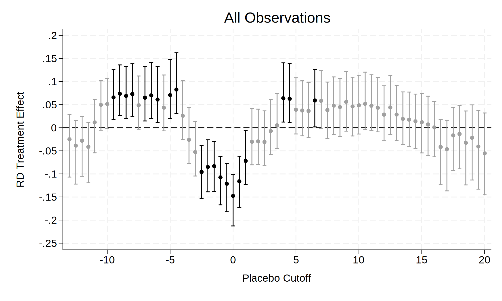 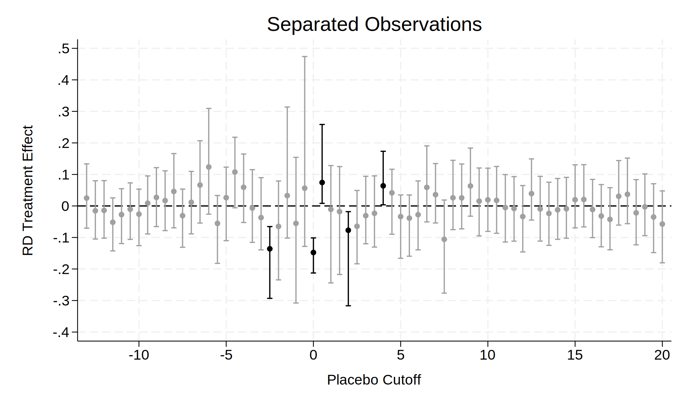
The placebo cutoff tests give mixed results. Whereas the approach that seperates observations yields hardly any significant estimates (6% is significant), the approach with all observations yields a substantial number of them (29% is significant).
Nevertheless, with a discontinuity as clear as this one, contamination is a credible explanation. The persistent estimate pattern in the plot with all observations at least suggests so. If significant estimates were driven by overfitting, it would be more likely for the estimates to follow a random pattern, with significant positive estimates directly followed by significant negative ones. The next plot shows that mixing treated and control units can create unusual model fits that should not count as real false positives. At the placebo cutoff of -8, the line on the right side of the placebo cutoff is a combination of treated and control units, which gives a poor fit that cannot be extrapolated outside of the bandwidth.
Code
with(df, rdplot(y=inc_party_wonfor1_b1, x=mv_incparty, p=1, c=-8, kernel = "triangular", h=rd_l1$bws[1],
x.lim = c(-50,50), col.dots = "grey60", col.lines = "black", y.lim = c(0,0.6),
x.label = "Incumbent Party Vote Margin at t",
y.label = "Probability of Unconditional Victory at t+1",
title = "Placebo Cutoff at -8"))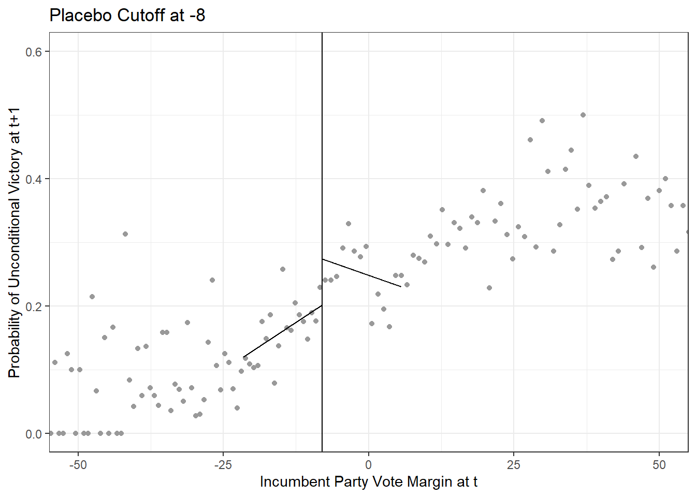
For these reasons, I would only consider the results from the approach that separates observations. Its false positive rate of 6% is close that the nominal 5% that one would expect using 95% confidence intervals. The placebo cutoff test thus supports the findings from the main model.
Test 9: Statistical Power
Calculating statistical power is essential in RD designs since the effective sample size is often much smaller than the full sample due to the bandwidth. In underpowered analyses, the risk that statistically significant effects are false positives is higher. By demonstrating that the analysis has sufficient power, researchers address this concern.
Statistical power is easily calculated with rdpower software. The only requirement is an effect size. Post-hoc power analyses, which use the estimated effect size, are to be avoided. They are simply a different way of writing the p-value, as statistical power and the p-value are directly related. If the p-value is low, statistical power will be high. Ideally, there are external effect sizes available, either from previous studies or based on theoretical predictions. Another option is to use effect size measures. I use the latter: a medium effect size according to Cohen’s \(d\), half the standard deviation of the outcome of control units within the MSE-optimal bandwidth. This corresponds to an effect size of 0.215.
Though rdpower has a plot function, customization in R is limited. I therefore plot the power curve myself.
tau <- -0.5*sd(df %>% filter(mv_incparty<0, mv_incparty>-rd_l1$bws[1]) %>%
select(inc_party_wonfor1_b1) %>% unlist(), na.rm=T)
pwr_calc <- with(df, rdpower(data=cbind(inc_party_wonfor1_b1, mv_incparty), tau=tau))
Number of obs = 10010
BW type = mserd
Kernel type = Triangular
VCE method = NN
Derivative = 0
HA: tau = -0.215
Cutoff c = 0 Left of c Right of c
Number of obs 4454 5556
Eff. number of obs 2548 2758
BW loc. poly. 13.566 13.566
Order loc. poly. 1 1
Sampling BW 13.566 13.566
New sample 2548 2758
=========================================================================================
Power against: H0: tau = 0.2*tau = 0.5*tau = 0.8*tau = tau =
0 -0.043 -0.108 -0.172 -0.215
-----------------------------------------------------------------------------------------
Robust bias-corrected 0.05 0.329 0.967 1 1
=========================================================================================Code
plot.new()
left <- -0.25
right <- 0.25
alpha <- 0.05
se <- pwr_calc$se.rbc
pwr <- pwr_calc$power.rbc
plot(function(x) 1 - pnorm((x)/se + qnorm(1 - alpha/2)) +
pnorm((x)/se - qnorm(1 - alpha/2)), from = left,
to = right, xlab = "", ylab = "", xlim = c(left, right))
abline(h=pwr, v=tau, lty=2)
title(main="Power Plot",
ylab="Power",
xlab=paste("Treatment Effect\nEffect size of", round(tau,2),
"yields statistical power of", round(100*pwr,0), "%" ))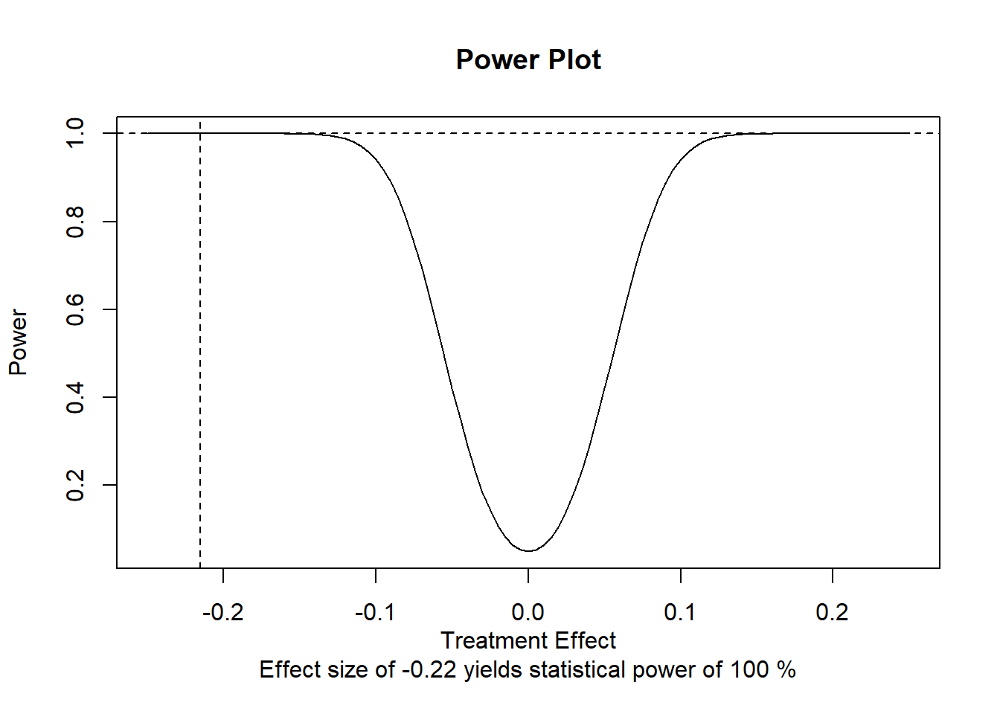
qui sum inc_party_wonfor1_b1 if mv_incparty<0&mv_incparty>-e(h_l)
local tau = -round(0.5*r(sd),0.001)
qui rdpow inc_party_wonfor1_b1 mv_incparty, tau(`tau')
local power = round(100*r(power_rbc), 1)
rdpow inc_party_wonfor1_b1 mv_incparty, tau(`tau') plot graph_options(title(Power Plot) ///
subtitle(Effect size of `tau' yields statistical power of `power'%) ytitle(Power) ///
xtitle(Treatment Effect) legend(off) xline(`tau', lpattern(dash)))
qui graph export "powerplot.svg", replace Cutoff c = 0 | Left of c Right of c Number of obs = 10010
----------------------+---------------------- BW type = mserd
Number of obs | 4454 5556 Kernel = Triangular
Eff. Number of obs | 2548 2758 VCE method = NN
BW loc. poly. (h) | 13.566 13.566 Derivative = 0
Order loc. poly. (p) | 1 1 HA: tau = -0.215
----------------------+----------------------
Sampling BW | 13.566 13.566
New sample | 2548 2758
Outcome: inc_party_wonfor1_b1. Running variable: mv_incparty.
-------------------------------------------------------------------------------
Power against: | H0: tau= 0.2*tau = 0.5*tau = 0.8*tau = tau =
| 0.000 -0.043 -0.107 -0.172 -0.215
----------------------+--------------------------------------------------------
Robust bias-corrected | 0.050 0.328 0.966 1.000 1.000
-------------------------------------------------------------------------------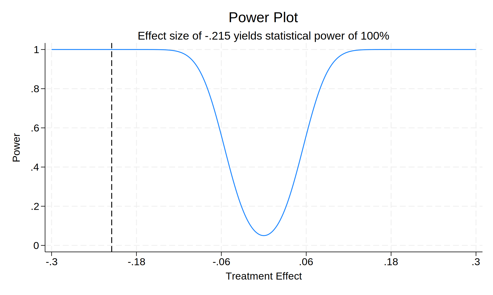
With a statistical power of 100%, the analysis is clearly sufficiently powered to detect medium effect sizes. In addition, the plot shows that statistical power is acceptable up to effect sizes as small as approximately 0.08, assuming the conventional threshold of 80%. Statistical power should therefore not be a concern in this analysis.
Test 10: Covariates
Researchers can also alter the model specification by adding relevant pre-treatment covariates to the regression. In theory, this should only improve the efficiency of the estimation and leave point estimates practically unchanged (Cattaneo, Keele, and Titiunik 2023). If the estimates do change, this may indicate sorting, reflected in a discontinuity in one or more of the covariates. Alternatively, it could suggest that the default model overfits to noise, as the covariates may have altered the noise pattern. Either way, substantial changes after adding covariates signal the need to further investigate the reliability of the main model.
I add the same covariates as from the balance test, with the exception of the ‘Municipality in Center-East’ dummy - this is to avoid multicolinearity.
cov <- with(df, rdrobust(inc_party_wonfor1_b1, mv_incparty,
covs=cbind(pibpc, population, winner_age, winner_educ,
winner_male, numpar_candidates_eff, dnorte,
dnordeste, dsul, dsudeste, revenue_total, expend_total)))
cov_out <- data.frame(mod=c("Main", "With\nCovariates"),
est=c(rd_l1$coef[1], cov$coef[1]),
ci_l=c(rd_l1$ci[3,1], cov$ci[3,1]),
ci_r=c(rd_l1$ci[3,2], cov$ci[3,2]))
cov_out %<>% mutate(sig=!(ci_l<0&ci_r>0)) Code
cov_out %>% ggplot(aes(factor(mod, level=unique(mod)), est, col=factor(sig, level=c(T, F)))) +
geom_hline(yintercept = 0, col="grey30") +
geom_point() +
geom_errorbar(aes(ymin=ci_l, ymax=ci_r)) +
annotate("rect", xmin = 0.5, xmax = 1.5, ymin = -0.25, ymax = 0.05, alpha = .15) +
theme_bw() +
scale_y_continuous(expand=c(0,0), limits=c(-0.25,0.05)) +
scale_color_manual(breaks=c(T,F), values=c("black", "grey60")) +
labs(x="Model",
y="Estimated Treatment Effect") +
theme(panel.grid.minor = element_blank(),
legend.position = "none")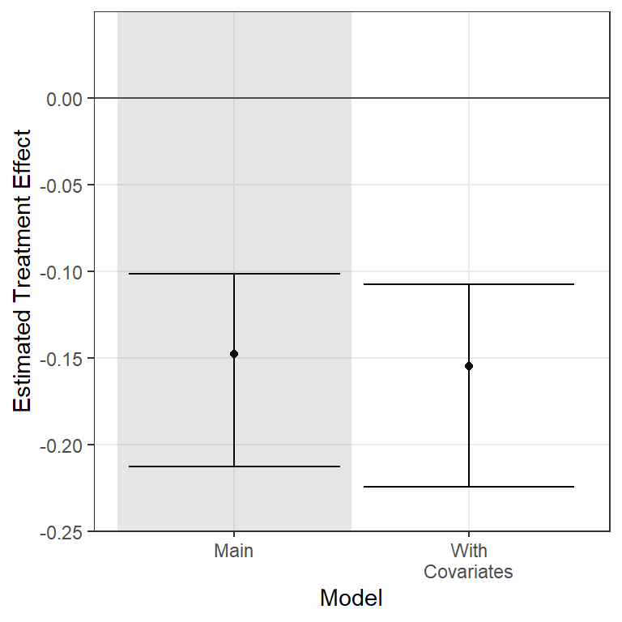
preserve
postutil clear
tempfile results
postfile table mod est ci_l ci_r using `results'
qui rdrobust inc_party_wonfor1_b1 mv_incparty
post table (1) (e(tau_cl)) (e(ci_l_rb)) (e(ci_r_rb))
qui rdrobust inc_party_wonfor1_b1 mv_incparty, covs(pib population ///
numpar_candidates_eff dnorte dsul expend_total revenue_total)
post table (2) (e(tau_cl)) (e(ci_l_rb)) (e(ci_r_rb))
postclose table
use `results', clear
label def mods 1 "Main" 2 "With Covariates"
label val mod mods
scatter est mod, mc(black) xlabel(1/2, valuelabel) || rcap ci_r ci_l mod, lc(black) ||, ///
yline(0) xtitle("Model", margin(small)) ytitle("RD Treatment Effect", margin(small)) ///
legend(off) graphregion(color(white)) xscale(range(0.5 2.5)) yscale(range(-0.25 0.05)) ///
ylabel(-0.25(0.05)0.05)
qui graph export "covplot.svg", replace
restore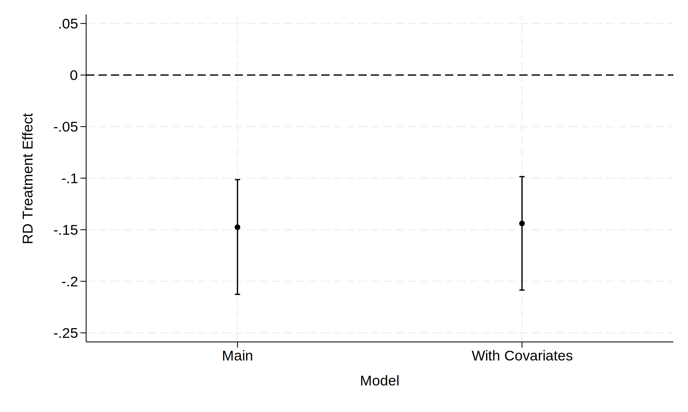
Adding covariates does not lead to different inferences. The estimated treatment effect and its accompanying confidence interval stay practically the same. The main models is thus robust to the inclusion of covariates.
Summary
This replication exercise successfully reproduces and increases confidence in the main result in Table 2 of KT. The density test, balance test, and donut RD give no reason to suspect sorting behavior, supporting the RD identification assumption. Moreover, the various model specification tests yield remarkably stable estimates, demonstrating robustness of the main model. The analysis is well-powered, yields the expected number of false positive findings, and is not sensitive to the inclusion of covariates. By subjecting the main results to such extensive testing, I show that RD designs can meet a high testing standard, and hopefully inspire other researchers to be as thorough in their RD analysis.
References
Albada, Melle R. 2024a. “Comment on ‘Why High-Order Polynomials Should Not Be Used in Regression Discontinuity Designs’.”
———. 2024b. “Overfitting in Regression Discontinuity Designs: A Reconsideration of Global and Local Models.”
Barreca, Alan I, Melanie Guldi, Jason M Lindo, and Glen R Waddell. 2011. “Saving Babies? Revisiting the Effect of Very Low Birth Weight Classification.” The Quarterly Journal of Economics 126 (4): 2117–23.
Calonico, Sebastian, Matias D Cattaneo, and Rocio Titiunik. 2015. “Optimal Data-Driven Regression Discontinuity Plots.” Journal of the American Statistical Association 110 (512): 1753–69.
Cattaneo, Matias D, Michael Jansson, and Xinwei Ma. 2020. “Simple Local Polynomial Density Estimators.” Journal of the American Statistical Association 115 (531): 1449–55.
Cattaneo, Matias D, Luke Keele, and Rocio Titiunik. 2023. “Covariate Adjustment in Regression Discontinuity Designs.” Handbook of Matching and Weighting Adjustments for Causal Inference, 153–68.
Fitzgerald, Jack. 2024. “Manipulation Tests in Regression Discontinuity Design: The Need for Equivalence Testing.”
Gelman, Andrew, and Guido Imbens. 2019. “Why High-Order Polynomials Should Not Be Used in Regression Discontinuity Designs.” Journal of Business & Economic Statistics 37 (3): 447–56.
Hartman, Erin. 2021. “Equivalence Testing for Regression Discontinuity Designs.” Political Analysis 29 (4): 505–21.
Klašnja, Marko, and Rocı́o Titiunik. 2017. “The Incumbency Curse: Weak Parties, Term Limits, and Unfulfilled Accountability.” American Political Science Review 111 (1): 129–48.
Korting, Christina, Carl Lieberman, Jordan Matsudaira, Zhuan Pei, and Yi Shen. 2023. “Visual Inference and Graphical Representation in Regression Discontinuity Designs.” The Quarterly Journal of Economics 138 (3): 1977–2019.
McCrary, Justin. 2008. “Manipulation of the Running Variable in the Regression Discontinuity Design: A Density Test.” Journal of Econometrics 142 (2): 698–714.
Footnotes
Equivalence confidence intervals can be NA due to very small t-statistics (either through a large standard error or a small effect size). In the case of the population variable, it is due to a small effect size, meaning that practically any equivalence test would be statistically significant. The NA confidence interval is therefore no reason for concern. See Hartman (2021), footnote 19 for a discussion.↩︎